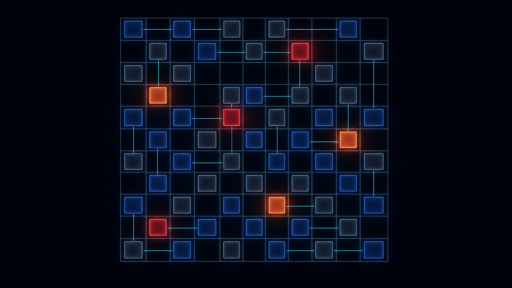
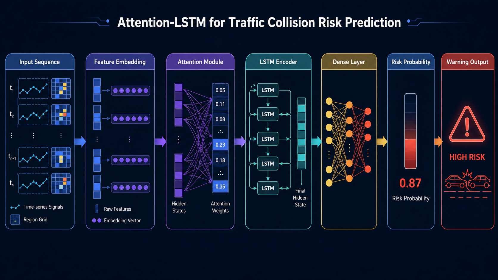
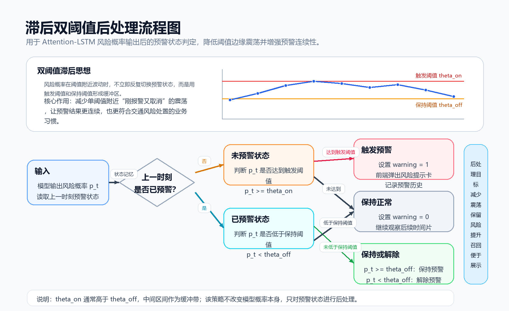
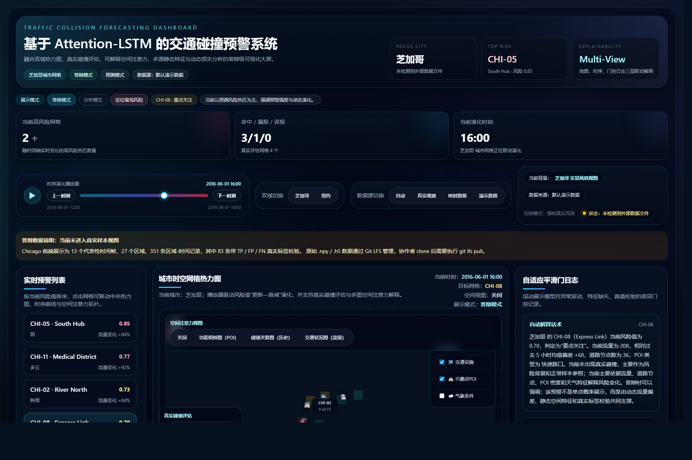

早晚高峰风险骤升，相邻区域存在风险传播。传统模型把区域当独立样本——丢失空间上下文。
事故是少数事件，正样本仅占 13%–22%。模型全判"安全"，准确率能到 78%——但召回率为零。
风险预测在阈值附近频繁跳变——"危险"↔"安全"↔"危险"——预警系统完全不可用。

动态特征变化剧烈 → 可能是噪声。平滑门让模型自己决定——信新特征还是保留旧特征——而不是直接覆盖。
双阈值滞回：开启阈值 ≠ 保持阈值。进入预警需高风险，退出需更低——中间 0.05 的滞回区间防抖动。类似施密特触发器。

| 模型 | AUC-PR | Recall | F1 |
|---|---|---|---|
| Myplan | 0.6955 | 0.8265 | 0.6443 |
| SNIPER | 0.6240 | 0.7004 | 0.6262 |
| LightGBM | 0.6341 | 0.7569 | 0.6141 |
| LSTM | 0.5899 | 0.7914 | 0.6155 |
| XGBoost | 0.6201 | 0.7548 | 0.6116 |
| ARIMA | 0.2394 | 0.2941 | 0.2875 |
| 配置 | NYC | Chicago |
|---|---|---|
| 去平滑门 + 去后处理 | 0.7108 | 0.6318 |
| 去平滑门 | 0.8046 | 0.6693 |
| 去流式后处理 | 0.7407 | 0.6401 |
| 完整模型 | 0.8265 | 0.7055 |
